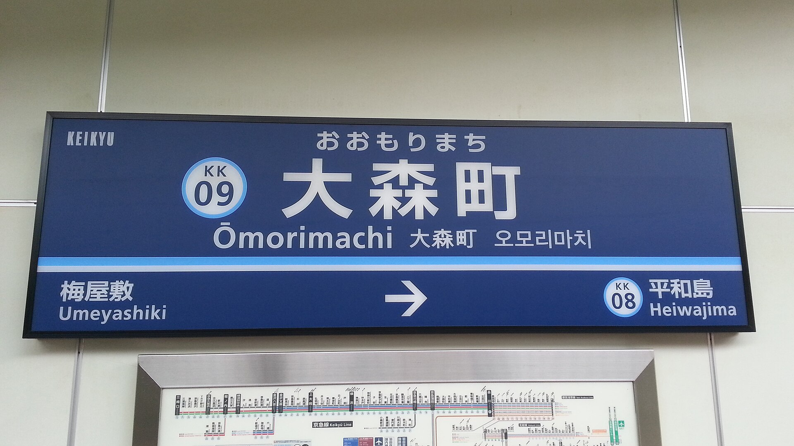
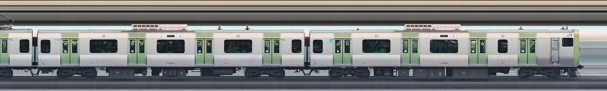
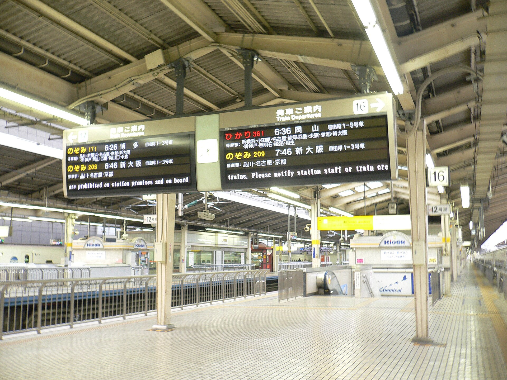
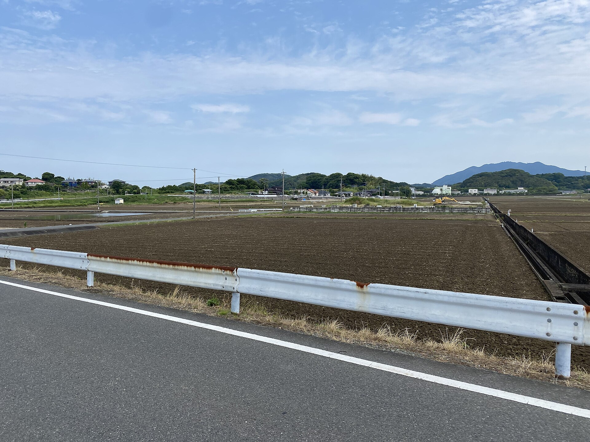
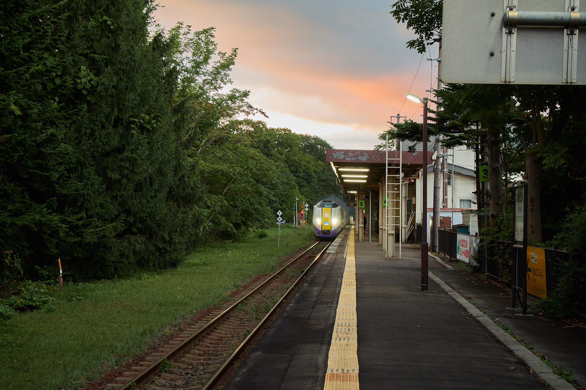

按遗忘曲线复习
每天自动排出该复习的卡片，翻面后按一个键评分，下次出现的时间随之调整。
10/29 星期四
快速 今天 3 站，约 95 分钟
0/3

时长按真实课程算：B 站阿飞老师的新标日视频，乘 1.2 留出暂停回看，再加上每站的讲解和练习。
终点
按零基础的中文母语者估算，包括上课、背词、复习、听读和备考；到 N2 约 1000 小时，实际快慢因人而异。
— 天后到站
预计 — · 共 — 站 · 约 — 小时
以第 13 站（新标日第 7 课）为例，合计约 91 分钟。一天学不完就分两天，视频会记住看到哪一秒。
每天自动排出该复习的卡片，翻面后按一个键评分，下次出现的时间随之调整。
对着手机读一句，逐字比对你说的和原文，58 句旅行与生活常用句可以练。
前 5 站专门学假名：平假名、片假名、浊音、拗音、长音，学完才进入课文。
72 个场景对话、作文逐句批改、随手查词。用你自己的 DeepSeek Key，软件里有申请教程。
104 个 N5 汉字的音训和常用词，还有听写、带注音的短文和发音辨析。
一个账号，手机上学到哪里，电脑上接着学。没网时的进度连上网后自动补交。



设好每天的提醒时间。没学的话，21:00 再催一次；学过了就不打扰。提醒由一位嘴硬的红茶大小姐来写：
软件、课程、更新全部免费，没有会员，也没有广告。唯一可能花钱的是 AI 老师：它调用 DeepSeek，需要您自己申请一个 Key，按用量付费，平常练习一个月通常只要几块钱。不用 AI 功能也能把 99 站全部学完。
可以，就是为零基础设计的。注册后先选终点（N5 到 N1）和每天能学多久，软件会排出计划，从第 0 站“怎么用这个软件”和五十音开始。
能。软件默认走国内可直连的线路。网页版如果打不开，请改用 jpd.azclient.top:8443。
因为安装包不是从应用商店下的。在提示里点“设置”，允许浏览器安装未知应用，再回来点“继续安装”即可。之后的界面更新会在软件里自动完成。
这是 SmartScreen 对新软件的默认提示。点“更多信息”，再点“仍要运行”。以后的版本会在软件里自动更新。
来自 B 站阿飞老师公开的新标日课程合集，在软件里直接嵌入 B 站播放器播放，并记住每一集看到的位置。版权归原作者所有。
存在一駅的服务器上，用来在几台设备之间同步。不会出售或分享给任何第三方。您的 DeepSeek Key 加密保存，只用来替您调用 AI。
